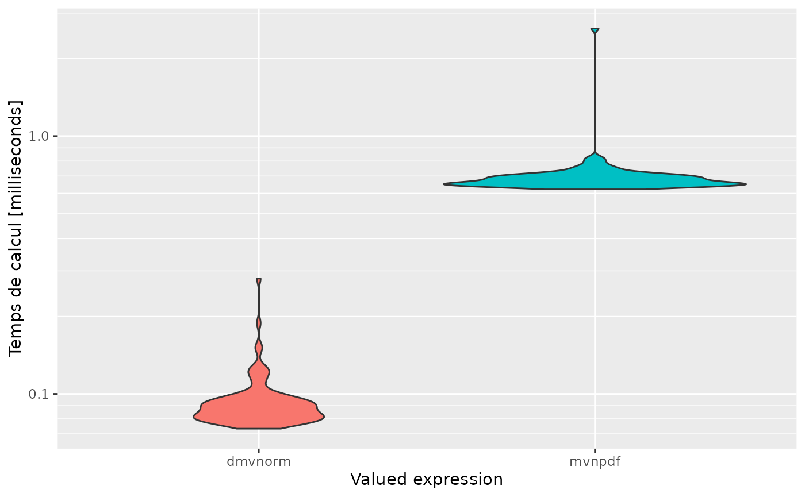
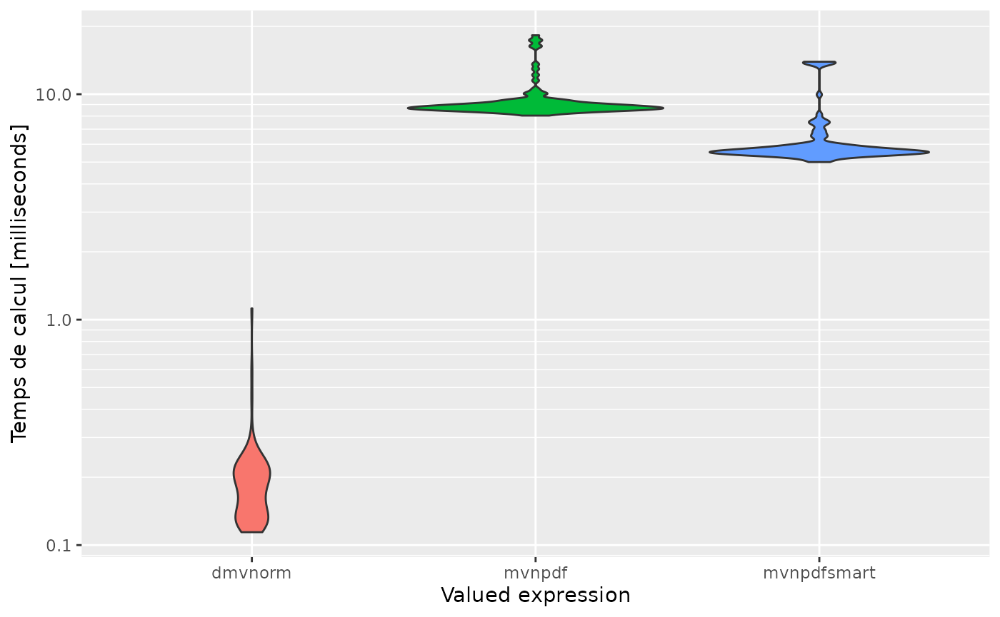
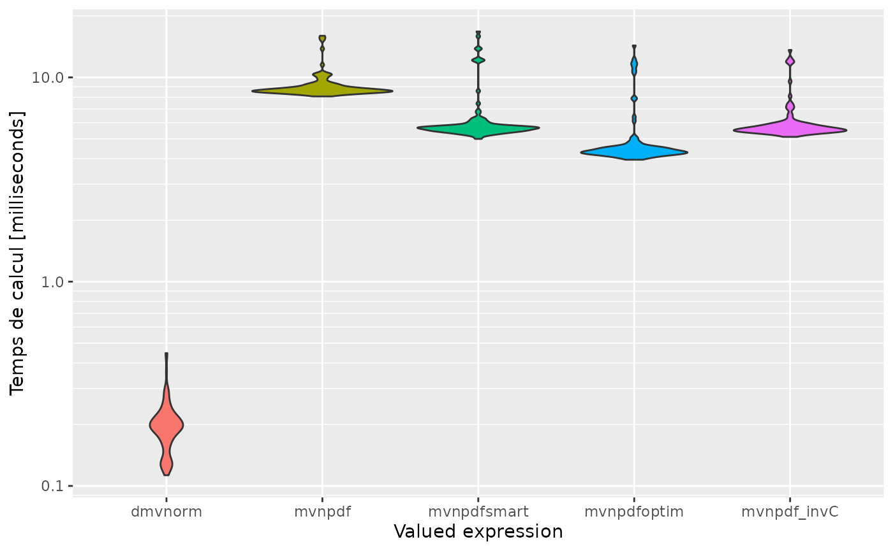
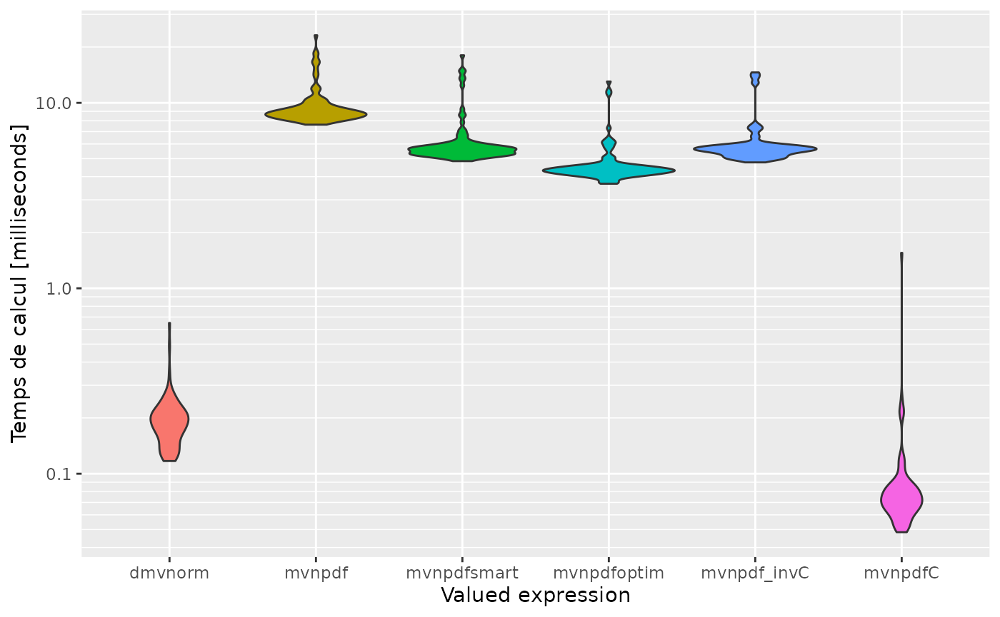
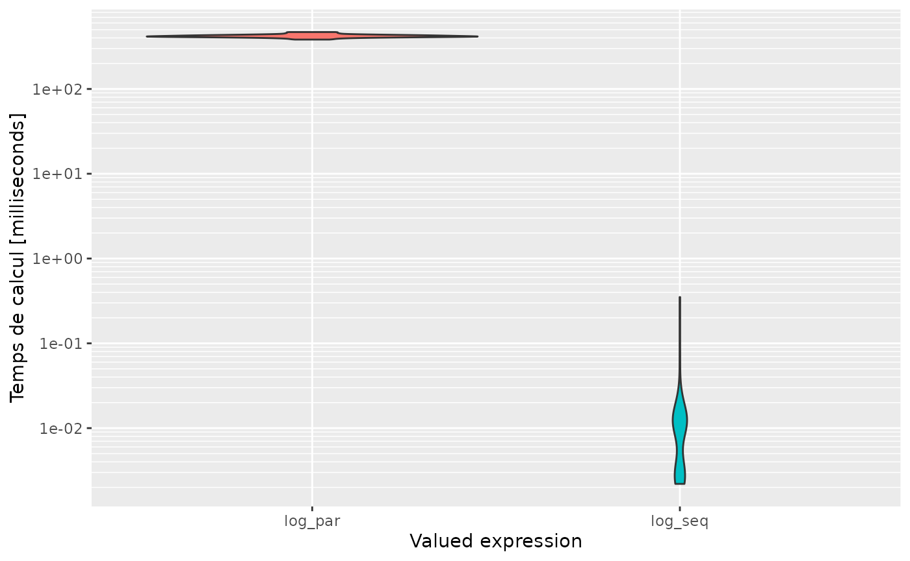

library(mypkgr)
library(devtools)
#> Loading required package: usethis
devtools::install_github("Florian-40/microbenchmark")
#> Using github PAT from envvar GITHUB_PAT
#> Downloading GitHub repo Florian-40/microbenchmark@HEAD
#> * checking for file ‘/tmp/Rtmp3hJpKq/remotes3546611b49d0/Florian-40-microbenchmark-c9b47c1/DESCRIPTION’ ... OK
#> * preparing ‘microbenchmark’:
#> * checking DESCRIPTION meta-information ... OK
#> * cleaning src
#> * running ‘cleanup’
#> * checking for LF line-endings in source and make files and shell scripts
#> * checking for empty or unneeded directories
#> * building ‘microbenchmark_1.4.9.tar.gz’
#> Installing package into '/home/runner/work/_temp/Library'
#> (as 'lib' is unspecified)
library(microbenchmark)
library(ggplot2)Comparison with our microbenchmark package.
You can find microbenchmark package on my Git-Hub page : https://github.com/Florian-40/microbenchmark.git
mb <- microbenchmark(mvtnorm::dmvnorm(rep(1.96, 2)),
mvnpdf(x=matrix(rep(1.96,2)), Log=FALSE),
times=1000L)
mb
#> Unit: microseconds
#> expr min lq mean median uq
#> mvtnorm::dmvnorm(rep(1.96, 2)) 63.2 73.20 103.0773 80.0 88.35
#> mvnpdf(x = matrix(rep(1.96, 2)), Log = FALSE) 55.2 65.65 76.8534 70.9 78.25
#> max neval
#> 20613.7 1000
#> 1702.4 1000
expression<-c('dmvnorm', 'mvnpdf')
autoplot(mb, expression)
#> Scale for 'y' is already present. Adding another scale for 'y', which will
#> replace the existing scale.And with multidimensionnal, we get :
n <- 100
mb <- microbenchmark(mvtnorm::dmvnorm(matrix(1.96, nrow = n, ncol = 2)),
mvnpdf(x=matrix(1.96, nrow = 2, ncol = n), Log=FALSE),
times=100L)
mb
#> Unit: microseconds
#> expr min lq mean
#> mvtnorm::dmvnorm(matrix(1.96, nrow = n, ncol = 2)) 73.3 80.65 93.405
#> mvnpdf(x = matrix(1.96, nrow = 2, ncol = n), Log = FALSE) 621.5 648.10 698.946
#> median uq max neval
#> 87.4 95.10 280.2 100
#> 669.3 703.55 2615.9 100
expression<-c('dmvnorm', 'mvnpdf')
autoplot(mb, expression)
#> Scale for 'y' is already present. Adding another scale for 'y', which will
#> replace the existing scale.
Profiling
By using this lines in terminal, we can check profiling of the code :
profvis::profvis({
+ n <- 10e4
+ pdfval <- mvnpdf(x=matrix(1.96, nrow = 2, ncol = n), Log=FALSE)
+ })
mvnpdfsmartfunction.
We can use new function mvnpdfmart and check profile with similar code :
profvis::profvis({
+ n <- 10e4
+ pdfval <- mvnpdfsmart(x=matrix(1.96, nrow = 2, ncol = n), Log=FALSE)
+ })We can compare results with a microbenchmark :
n <- 1000
mb <- microbenchmark(mvtnorm::dmvnorm(matrix(1.96, nrow = n, ncol = 2)),
mvnpdf(x=matrix(1.96, nrow = 2, ncol = n), Log=FALSE),
mvnpdfsmart(x=matrix(1.96, nrow = 2, ncol = n), Log=FALSE),
times=100L)
mb
#> Unit: microseconds
#> expr min lq
#> mvtnorm::dmvnorm(matrix(1.96, nrow = n, ncol = 2)) 114.1 131.90
#> mvnpdf(x = matrix(1.96, nrow = 2, ncol = n), Log = FALSE) 8038.3 8579.25
#> mvnpdfsmart(x = matrix(1.96, nrow = 2, ncol = n), Log = FALSE) 5000.6 5454.35
#> mean median uq max neval
#> 194.642 181.55 216.75 1121.8 100
#> 9402.443 8794.65 9172.20 18258.9 100
#> 6368.446 5605.20 5947.00 13936.6 100
expression<-c('dmvnorm', 'mvnpdf', 'mvnpdfsmart')
autoplot(mb, expression)
#> Scale for 'y' is already present. Adding another scale for 'y', which will
#> replace the existing scale.
mvnpdfoptim function.
We can use new function mvnpdfmart and check profile with similar code :
profvis::profvis({
+ n <- 10e4
+ pdfval <- mvnpdfoptim(x=matrix(1.96, nrow = 2, ncol = n), Log=FALSE)
+ })We can compare all results with a microbenchmark:
n <- 1000
mb <- microbenchmark(mvtnorm::dmvnorm(matrix(1.96, nrow = n, ncol = 2)),
mvnpdf(x=matrix(1.96, nrow = 2, ncol = n), Log=FALSE),
mvnpdfsmart(x=matrix(1.96, nrow = 2, ncol = n), Log=FALSE),
mvnpdfoptim(x=matrix(1.96, nrow = 2, ncol = n), Log=FALSE),
times=100L)
mb
#> Unit: microseconds
#> expr min lq
#> mvtnorm::dmvnorm(matrix(1.96, nrow = n, ncol = 2)) 111.4 137.90
#> mvnpdf(x = matrix(1.96, nrow = 2, ncol = n), Log = FALSE) 8041.4 8404.85
#> mvnpdfsmart(x = matrix(1.96, nrow = 2, ncol = n), Log = FALSE) 5107.1 5358.30
#> mvnpdfoptim(x = matrix(1.96, nrow = 2, ncol = n), Log = FALSE) 3899.5 4129.80
#> mean median uq max neval
#> 176.643 180.00 204.20 362.3 100
#> 9205.713 8677.70 9090.40 16785.4 100
#> 7078.850 5529.45 5848.95 128585.3 100
#> 4897.239 4256.00 4450.10 15084.7 100
expression<-c('dmvnorm', 'mvnpdf', 'mvnpdfsmart', 'mvnpdfoptim')
autoplot(mb, expression)
#> Scale for 'y' is already present. Adding another scale for 'y', which will
#> replace the existing scale.
Using Rccp Armadillo functions.
We write a better inversion matrix with C++ language and we include it in mvnpdfsmart. Thus, we get microbenchmark :
n <- 1000
mb <- microbenchmark(mvtnorm::dmvnorm(matrix(1.96, nrow = n, ncol = 2)),
mvnpdf(x=matrix(1.96, nrow = 2, ncol = n), Log=FALSE),
mvnpdfsmart(x=matrix(1.96, nrow = 2, ncol = n), Log=FALSE),
mvnpdfoptim(x=matrix(1.96, nrow = 2, ncol = n), Log=FALSE),
mvnpdf_invC(x=matrix(1.96, nrow = 2, ncol = n), Log=FALSE),
times=100L)
mb
#> Unit: microseconds
#> expr min lq
#> mvtnorm::dmvnorm(matrix(1.96, nrow = n, ncol = 2)) 112.8 167.55
#> mvnpdf(x = matrix(1.96, nrow = 2, ncol = n), Log = FALSE) 8070.7 8492.50
#> mvnpdfsmart(x = matrix(1.96, nrow = 2, ncol = n), Log = FALSE) 4999.0 5484.55
#> mvnpdfoptim(x = matrix(1.96, nrow = 2, ncol = n), Log = FALSE) 3953.4 4227.70
#> mvnpdf_invC(x = matrix(1.96, nrow = 2, ncol = n), Log = FALSE) 5114.1 5451.15
#> mean median uq max neval
#> 198.911 194.95 216.70 447.1 100
#> 9103.868 8680.05 9076.45 15987.4 100
#> 6334.742 5659.85 5831.35 16775.6 100
#> 4991.840 4363.20 4561.55 14333.4 100
#> 6093.486 5613.50 5885.15 13621.8 100
expression<-c('dmvnorm', 'mvnpdf', 'mvnpdfsmart', 'mvnpdfoptim', 'mvnpdf_invC')
autoplot(mb, expression)
#> Scale for 'y' is already present. Adding another scale for 'y', which will
#> replace the existing scale.
Now, use complete implementation of mvnpdfsmart in C++.
Rcpp::sourceCpp("../src/mvnpdfC.cpp")
n <- 1000
mb <- microbenchmark(mvtnorm::dmvnorm(matrix(1.96, nrow = n, ncol = 2)),
mvnpdf(x=matrix(1.96, nrow = 2, ncol = n), Log=FALSE),
mvnpdfsmart(x=matrix(1.96, nrow = 2, ncol = n), Log=FALSE),
mvnpdfoptim(x=matrix(1.96, nrow = 2, ncol = n), Log=FALSE),
mvnpdf_invC(x=matrix(1.96, nrow = 2, ncol = n), Log=FALSE),
mvnpdfC(x=matrix(1.96, nrow = 2, ncol = n), mean = rep(0, 2), varcovM = diag(2), Log=FALSE),
times=100L)
mb
#> Unit: microseconds
#> expr
#> mvtnorm::dmvnorm(matrix(1.96, nrow = n, ncol = 2))
#> mvnpdf(x = matrix(1.96, nrow = 2, ncol = n), Log = FALSE)
#> mvnpdfsmart(x = matrix(1.96, nrow = 2, ncol = n), Log = FALSE)
#> mvnpdfoptim(x = matrix(1.96, nrow = 2, ncol = n), Log = FALSE)
#> mvnpdf_invC(x = matrix(1.96, nrow = 2, ncol = n), Log = FALSE)
#> mvnpdfC(x = matrix(1.96, nrow = 2, ncol = n), mean = rep(0, 2), varcovM = diag(2), Log = FALSE)
#> min lq mean median uq max neval
#> 117.1 152.70 194.936 186.50 215.75 650.4 100
#> 7627.2 8397.55 9708.536 8835.15 9654.10 23144.3 100
#> 4850.3 5308.05 6247.285 5613.60 5892.25 18052.2 100
#> 3662.5 4161.70 4707.005 4338.95 4582.35 13037.8 100
#> 4775.4 5292.55 6129.456 5616.85 5883.90 14594.2 100
#> 48.4 63.10 96.326 72.75 84.90 1552.9 100
expression<-c('dmvnorm', 'mvnpdf', 'mvnpdfsmart', 'mvnpdfoptim', 'mvnpdf_invC', 'mvnpdfC')
autoplot(mb, expression)
#> Scale for 'y' is already present. Adding another scale for 'y', which will
#> replace the existing scale.
Parallel code
1st simple example.
Let’s try to calculate the logarithm of \(n\) numbers.
mb <- microbenchmark(log_par(1:100), log_seq(1:100), times=50)
mb
#> Unit: microseconds
#> expr min lq mean median uq max neval
#> log_par(1:100) 382460.3 411480.4 421754.696 418697.8 430139.0 468788.9 50
#> log_seq(1:100) 2.2 2.8 17.208 10.8 12.7 351.4 50
expression <- c('log_par', 'log_seq')
autoplot(mb, expression)
#> Scale for 'y' is already present. Adding another scale for 'y', which will
#> replace the existing scale.